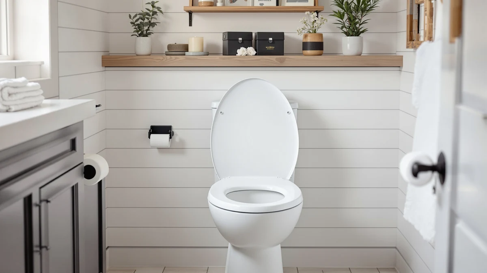

WLJBIDET Bidet Toilet Seat Review (2026): Worth It?
Prices and picks verified as of October 2026. Independent, reader-supported reviews.


Quick Answer
This wljbidet bidet toilet seat review finds the $179.99 WLJBIDET worth it for elongated bowls that want remote-controlled wash, a heated seat, and warm air drying in one unit. The Electric Heated Bidet Toilet Seat with LED Display below is the safer bet if a proven review history matters more to you than a few extra features.
Our pick: WLJBIDET Bidet Toilet Seat with ($179.99) Check Price on Amazon
Bottom line: our top pick is the WLJBIDET Bidet Toilet Seat with Remote Control at $179.99.
Things to Know Before You Buy
- The WLJBIDET needs a grounded outlet near the toilet to run its wash, heated seat, and drying functions, the same requirement as the XCQQ alternative in this wljbidet bidet toilet seat review.
- At $179.99, it costs about a dollar more than the XCQQ Electric Heated Bidet Toilet Seat ($178.99) and roughly $10 more than the Electric Heated Bidet Toilet Seat with LED Display ($169.99).
- It fits elongated toilet bowls; the XCQQ compared here is built for round bowls instead, so check your bowl shape before ordering.
- The Bemis Assurance alternative in this comparison skips bidet function entirely and solves a different need: a raised, handled seat for easier sitting and standing.
- It replaces your existing seat and mounts with standard hardware, so measuring your bowl shape matters as much as comparing bidet features before you order.
This wljbidet bidet toilet seat review breaks down what the $179.99 WLJBIDET Bidet Toilet Seat with Remote Control gets you, and whether its mix of warm water wash, a heated seat, and warm air drying justifies the price against three lower-priced alternatives. The WLJBIDET fits elongated toilet bowls, the shape common in most US bathrooms built since the 1990s, and it runs its wash and drying functions through an included remote rather than a side panel. If you want full bidet function with a display screen and a night light built in, that combination is what sets the price point for this comparison.
We compared the WLJBIDET against three alternatives for this wljbidet bidet toilet seat review: the XCQQ Electric Heated Bidet Toilet Seat, the Electric Heated Bidet Toilet Seat with LED Display, and the Bemis Assurance 3-inch Raised Toilet Seat with Handles, a different category of seat entirely. The first two compete directly on bidet function and price, while the Bemis solves a different problem, raised seating with support handles, for buyers who need stability rather than a wash function. Pricing, listed specs, and what verified owners report about each option point toward different answers depending on what your bathroom actually needs.
Why You Should Trust Us
Ilane Tall covers bathroom fixtures and toilet seat upgrades for Best Toilet Seats, including electric bidet models from WLJBIDET, XCQQ, and Bemis. For this wljbidet bidet toilet seat review, she compared manufacturer specifications, current Amazon pricing, and patterns across verified owner reviews rather than relying on claims from a single retailer listing.
We do not run a physical testing lab. Our picks come from comparing publicly available specs, pricing history, and what verified buyers report after they install these seats in their own bathrooms. That research-first approach lets us compare far more models across price points than any household could physically own at once, and we update pricing and picks as new information becomes available.
This site earns a commission when you buy through the links here, but that doesn't change which seat we'd point you toward. The WLJBIDET isn't the cheapest option in this comparison, and if a lower-priced alternative actually fits your bathroom better, saying so serves you more than pushing the higher-priced pick.
Our Research Experience
For this wljbidet bidet toilet seat review, we compared the manufacturer's listed materials, price, and feature set for all four seats, then cross-referenced installation and daily-use patterns that repeat across verified owner reviews on Amazon. We did not install or run any of these seats ourselves.
We get a broader view of value by comparing specifications, current pricing, and repeated owner feedback across two different seat categories, electric bidet seats and a raised seat built for mobility support, than one household could reach by living with a single unit. Where owner reviews disagreed with manufacturer claims, we noted the disagreement rather than picking a side.
We also checked how the WLJBIDET's $179.99 price and feature set stack up against two bidet seats priced within $10 of it, since buyers comparing this wljbidet bidet toilet seat review's top pick are usually choosing between close competitors rather than wildly different budgets.
Overview & Specs

WLJBIDET Bidet Toilet Seat with
What we like
- Adjustable warm water wash from 92°F to 102°F with rear, front, and one-touch auto modes
- Heated seat and adjustable warm air drying controlled from the included remote
- Self-cleaning nozzle activates automatically before and after each use
Flaws but not dealbreakers
- Needs a grounded outlet near the toilet, the same requirement as the XCQQ alternative in this comparison
- No published rating or review count yet to confirm long-term reliability
- Built for elongated bowls only, so round-bowl bathrooms need a different model
| Material | Plastic / wood |
| Size | — |
The WLJBIDET Bidet Toilet Seat with Remote Control sits at $179.99, roughly a dollar more than the XCQQ alternative and about $10 more than the Electric Heated Bidet Toilet Seat with LED Display in this wljbidet bidet toilet seat review. Its housing combines molded plastic with a wood-composite base, and it's built for elongated toilet bowls, the shape most common in US bathrooms built since the 1990s. The water wash runs from 92°F to 102°F, with rear wash, front wash, and a one-touch automatic cleaning mode controlled from the included remote.
Beyond the wash function, the seat adds a heated surface with adjustable warmth, a warm air drying feature with its own adjustable temperature, a display screen, a night light, and a slow-closing lid. The self-cleaning nozzle runs automatically before and after each use. Because the seat draws power to run these functions, it needs a grounded outlet within reach of the toilet, the same requirement as the XCQQ seat compared below.
What We Liked
The clearest strength of the WLJBIDET is how much it packs into a single unit for $179.99. Rear wash, front wash, and a one-touch automatic mode cover more cleaning scenarios than a single fixed nozzle, and the adjustable range from 92°F to 102°F gives you more control than a seat with one fixed temperature.
The heated seat and warm air drying work together rather than as separate add-ons, and both adjust independently through the remote. Reviewers of similarly specced electric bidet seats consistently note that remote control is easier to use day to day than a side panel mounted low on the seat, especially for anyone with limited mobility.
The display screen and night light add convenience that several cheaper alternatives in this wljbidet bidet toilet seat review skip entirely. The XCQQ matches the display and night light feature for feature, but it's built for round bowls, so the WLJBIDET is the more direct fit if your bathroom has an elongated toilet.
What Could Be Better
Price is close but not nothing. At $179.99, the WLJBIDET costs about a dollar more than the XCQQ and roughly $10 more than the Electric Heated Bidet Toilet Seat with LED Display, which also carries a published 4.4-star average across 565 verified reviews, a track record the WLJBIDET doesn't yet have, as this wljbidet bidet toilet seat review found when comparing listings.
The electrical requirement remains a real constraint. Owners of similarly specced electric bidet seats report needing a grounded outlet near the toilet before installation, and older bathrooms often don't have one wired in, adding an electrician's visit on top of the purchase price.
Available listings for the WLJBIDET don't include a published rating or review count at the time of this review, which makes it harder to gauge long-term reliability compared to the LED Display alternative's larger public review history.
Who Is It For?
The WLJBIDET makes sense if you want full bidet function with a heated seat, warm air drying, and remote control on an elongated bowl, and you're comparing it against similarly priced electric bidet seats in this wljbidet bidet toilet seat review rather than a basic seat swap. At $179.99, it sits in the middle of this comparison, so the decision comes down to whether the display screen and night light are worth the small premium over the LED Display alternative.
Skip it if you have a round toilet bowl. The XCQQ in this comparison is built specifically for round bowls and matches the WLJBIDET feature for feature otherwise. And if a published review history matters more to you than a few extra features, the Electric Heated Bidet Toilet Seat with LED Display's 4.4-star average across 565 reviews is worth weighing against the WLJBIDET's unproven track record.
If what you actually need is a raised, stable seat for easier sitting and standing rather than bidet function, the Bemis Assurance in this comparison solves that problem directly and skips the electrical requirement entirely.
Alternatives to Consider
The WLJBIDET isn't the only option if your priority is a round-bowl fit, a proven review history, or a non-bidet raised seat. Here are three alternatives we compared alongside it for this wljbidet bidet toilet seat review, each suited to a different bathroom and budget.

Editor's Pick
XCQQ Electric Heated Bidet Toilet
At $178.99, the XCQQ Electric Heated Bidet Toilet Seat matches the WLJBIDET's display screen, night light, and adjustable wash temperature, but it's built for round bowls instead of elongated ones, so bowl shape decides which seat fits your bathroom.
$178.99
Check Price on Amazon
Best Value
Electric Heated Bidet Toilet Seat
The Electric Heated Bidet Toilet Seat with LED Display costs $169.99 and carries a 4.4-star average across 565 verified reviews, the only seat in this comparison with a published track record that long.
$169.99
Check Price on Amazon
Premium Choice
Bemis Assurance 3" Raised Toilet
The Bemis Assurance 3-inch Raised Toilet Seat with Handles costs $153.60 and skips bidet function entirely, built instead to support up to 1,000 pounds with handles for easier sitting and standing.
$153.60
Check Price on AmazonFrequently Asked Questions
Is the WLJBIDET Bidet Toilet Seat worth $179.99?
Based on this wljbidet bidet toilet seat review, it's worth the price if you want full bidet function with remote control, a heated seat, warm air drying, a display screen, and a night light on an elongated bowl. If your toilet has a round bowl instead, the XCQQ alternative compared here matches the same features for about a dollar less.
How does the WLJBIDET compare to the Electric Heated Bidet Toilet Seat with LED Display?
The Electric Heated Bidet Toilet Seat with LED Display costs $169.99, about $10 less than the WLJBIDET, and it already carries a 4.4-star average across 565 verified reviews. The WLJBIDET doesn't yet have a published rating, so buyers who weight review history heavily may prefer the cheaper option.
Does the WLJBIDET need a dedicated electrical outlet?
Yes. The WLJBIDET is an electric bidet seat, so it needs a grounded outlet near the toilet to run its wash, heated-seat, and drying functions. If your bathroom doesn't already have one, budget for an electrician's visit on top of the $179.99 price before choosing this wljbidet bidet toilet seat review's top pick.
Final Verdict
Our wljbidet bidet toilet seat review comes down to a close call between three similarly priced electric bidet seats and one unrelated raised seat. The WLJBIDET is the most fully featured option here for an elongated bowl, combining remote-controlled wash, a heated seat, warm air drying, a display screen, and a night light for $179.99. If your toilet has a round bowl, the XCQQ matches those features for about a dollar less, and if a proven review history matters more than a few extra features, the Electric Heated Bidet Toilet Seat with LED Display's 4.4-star track record is worth the $10 savings. For most households with an elongated bowl who want the fullest feature set in this comparison, the WLJBIDET is the pick.
Related Guides
For more context on this wljbidet bidet toilet seat review's comparison, these guides dig deeper into bidet seat features, troubleshooting, and installation requirements.